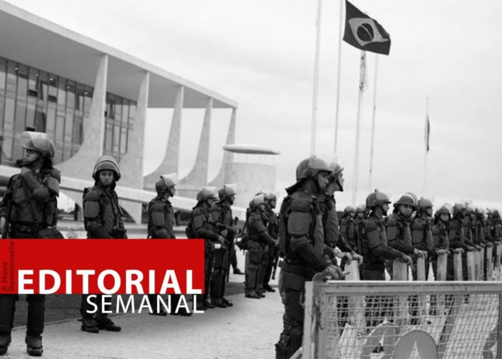
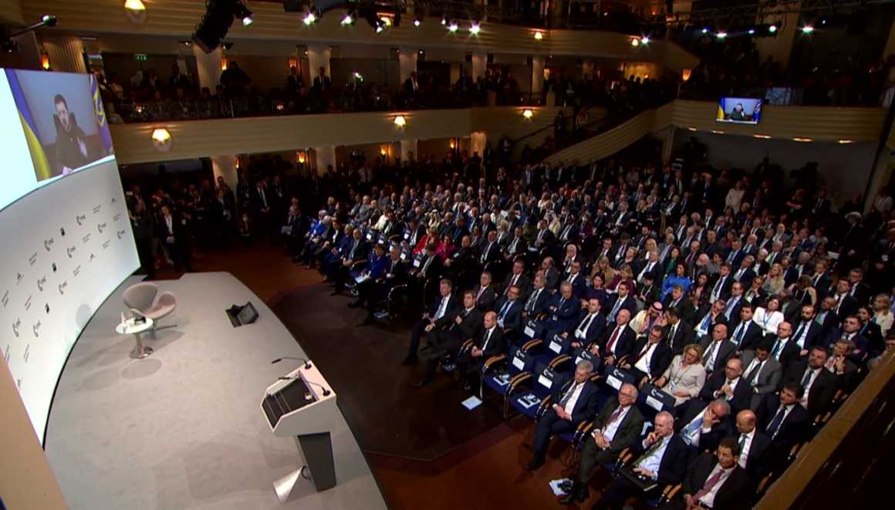
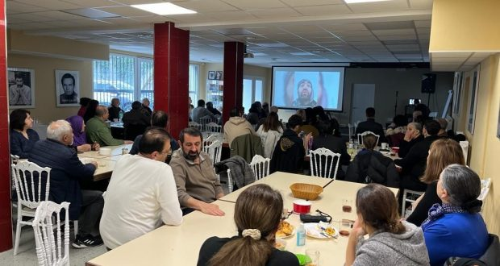
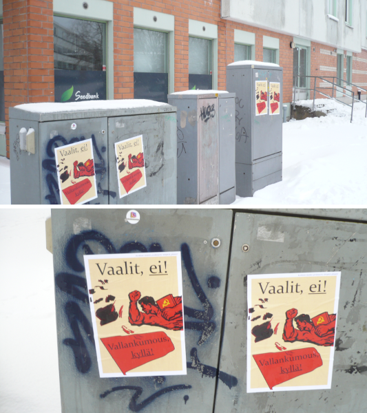
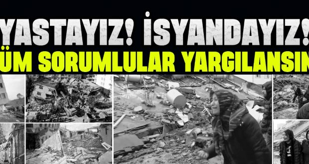

Marxism-Leninism-Maoism News
马列毛主义新闻
[This lan. PDF][This lan. ODT][This lan. MD][This lan. TXT][This lan. TXT LIST]
Please select your language 请选择你的语言:
Origin | 中文 | English
Live #142 & quot; live on the cry of 3 & quot; - The new democracy
Author: Rosa Minine
Description: The Choro das 3 group, interviewed in and edition of and, holds the weekly project Quintas Live, a series of broadcasts shows through its
Publish Time: 2023-02-20T00:05:00-03:00
Modified Time: None
Updated Time: None
Images: ['Batuq21Fev.png']
Section: Agenda Cultural
Tags: ['Agenda Cultural', 'Choro das 3', 'Corina flauta', 'Elisa bandolim', 'live', 'Quintas ao Vivo']
Type: article
 The Group Choro of the 3 , interviewed in the edition 54From and, performs the weekly project Thursdays live , a series of livers shows through your YouTube channel. The group, which turned 20 years in 2022, is formed by the sisters Corina (flute), Lia(Guitar 7CORDAS)E ELISA (mandolin).
The Group Choro of the 3 , interviewed in the edition 54From and, performs the weekly project Thursdays live , a series of livers shows through your YouTube channel. The group, which turned 20 years in 2022, is formed by the sisters Corina (flute), Lia(Guitar 7CORDAS)E ELISA (mandolin).
Abaixo: A Live#142 "Quintas ao Vivo com o Choro das 3", realizada noúltimo dia 09/02.
News Source: https://anovademocracia.com.br/128982-2/
Brazil: the calculations behind the capitulation of the militaristic reactionary
Author: Tjen Folket Media
Description: There was a lot of trouble when Luiz Inácio on January 21 kicked around 80 military serving in Planalto and the then Army Chief, Júlio César de Arruda, and replaced him with Tomás Miguel Ribeiro p…
Publish Time: 2023-02-20T04:30:00+00:00
Modified Time: 2023-02-21T20:56:41+00:00
Images: ['editorial-mathematics2-1160x829.jpg']
Tags: None
Category: 'Latin-Amerika'

*
_ Transferred for Earn Folket Media by a contributor._
A Nova Democracia's weekly leader article 02/02/2023.
The calculations behind the capitulation of the militaristic reactionary
There was a lot of trouble when Luiz Inácio on January 21 kicked around 80 military coveted in Planalto and the then Army Chief, Júlio César de Arruda, and replaced him with Tomás Miguel Ribeiro Paiva. Some, staggering by Blind Tropå The "stability" of bourgeois and the country's rotten institutions, and the Yankee imperialism "will not allow a bargain", went as far as Revoclamar that the effective "Lula government" was inserted, without the armed forces' road forces. Luiz Inácio proclaimed that he did not trust the armed forces that he wanted a cabinet for institutional security(GSI)Outdoor military staff, and played games for the audience that he would not be accepted militia ordinances(and shortly after would have them), in a staging avat he would not submit to "military power", to try to limit the room of esteem by isolating them in the opinion.
On January 31, a total of zero politically conscious people were "surprised" when Luiz inácio nominated 122 military personnel to GSI. The calculation is clear: Instead of restricting the army's presence and thus their influence, the Irregation, the President of the Republic increased it!Meanwhile, the PT president reported permission to prevent the Military Police The Federal District from shopping, night to January 8, against the camp, Ved Army headquarters. The episode, involving maneuvers with tanks from Devened forces to deter military police, was approved by Luiz Inácio, in the face of pressure from the generals. As is well known, this maneuver was performed such as attentive and reserve officers and their families could leave the camp and not be worn.To the extent that the government is trying to limit the coup movement with cabinet agreements and -sized statements on "democracy" -unknown to the broad masses of their daily lives -, only do ine(Today are the troops and now they play to win the masses, mainly small and intermediate bourgeoisie and lean on the debolsonarist evangelists among the poor). Regjeringen tenderer motkapitulasjon; når alt kommer til alt, hvordan kunne det være annerledes, hvisde siden valget i 2018 har vært stille om militærets konstante kupputtalelser?Ikke en eneste kritikk, bare forsoning!Når alt kommer til alt, hva kanregjeringen til den reaksjonære koalisjonen, der det store borgerskapet oggrunneierne, imperialismens tjenere, utøver makt? Hvis den hadde hatt enminimal grad av anstendighet, ville den umiddelbart ha oppfordret massene tilå ta til gatene for å forsvare de truede demokratiske frihetene!
I mellomtiden blir urfolk drept, som i den grusomme og kriminelle saken motyanomamiene, og bønder blir systematisk slaktet i sin rettferdige kamp forjord. Om morgenen den 28. januar skjøt politiet fra BOPE, militærpolitiet iRondônia, bønder som klatret opp i en båt for å krysse en elv; soldatenearresterte to unge mennesker, slepte dem til et øde sted, torturerte dem ogskar til og med ut tungen på en av dem, og henrettet dem deretter med kaldtblod. Pressemonopolene, de berømte politikerne og rettsinstitusjonene, heltenei forsvaret av dette demokratiet, er helt tause. Dette har vel ikke noe medditt demokrati å gjøre?
Det må også sies at utvekslingen av generaler i kommandoen over hæren, gjortav Luiz Inácio, ikke har endret noenting i hærens natur, og har heller ikkeendret dens kupp-planer, som er enstemmige blant de høye offiserene. Deneneste viktige forskjellen er spørsmålet om hvilket tidspunkt og i hvilkensituasjon militærkuppet vil kulminere. Bare se at den nå hyllede «legalistiskekommandanten», Tomás Miguel Ribeiro Paiva, var den samme som ble ansett for åvære hovedpersonen i skrivingen av Villas-Bôas ‘skremmende tweet, mot LuizInácios HC, i 2018 – en tweet som, tilstått, ble skrevet av ACFA for å gripeinn i det nasjonale politiske livet. Dette er den «legalistiske generalen»,den øverste garantien for demokrati i Brasil, for pressemonopolet ogopportunismen. Hvilke dårlige slør dekker dem!
To stop the coup in motion, it is impossible to rely on the opportunistic aristocracy, intoxicated by decades of societies in the palaces of the old state and expectations of reigning in many more. The least that can be done to support the masses, mobilizing them for their minimum rights, such as treading daily, through strikes, land seizures, occupation of universities and schools, in a stream of protests and revolutionary struggles; Without a dropletation with the democracy of the kingdoms.
News Source: https://tjen-folket.no/index.php/2023/02/20/brasil-kalkulasjonene-bak-kapitulasjonen-for-de-militaristiske-reaksjonaere/
Germany: Beauties and Real Policy in Munich
Author: Tjen Folket Media
Description: Around 800 bourgeois politicians, military leaders, business leaders, academics and lobbyists from different countries gathered this weekend to talk about military policy.
Publish Time: 2023-02-20T07:54:36+00:00
Modified Time: 2023-02-21T13:34:51+00:00
Images: ['MSC2023-1160x661.png']
Tags: None
Category: 'Internasjonalt'

*
By a commentator for the Earn Folket Media.
This weekend, the annual "Security Conference" in the Munich took place, and rounded 800 bourgeois politicians, military leaders, business leaders, academics and lobbyists from different countries gathered over three days to speak overvilitary policy.
According to NRK, the Norwegian state was heavily raised with as many as four ministers, Minister of State Jonas Gahr Støre. Also on the guest list were personalities Somgro Harlem Brundtland and Ine Eriksen Søreide, and of course NATO's Secretary General Stoltenberg.
The conference is the 59th in the series since its inception in 1963, and next to the AVG7 summit, the G20 summit and the World Economic Forum is one of the largest and most important bodies of political propaganda and agitation.
Of course, a common theme was the war in Ukraine, but the general character of the conference seems uninhabitable to a context where the whole imperialist world economy is in ever -increasing reaction and delay, and is in its greatest and deepest crisis since the Seceeth War.
To the extent that it is possible to trace any kind of optimism from the yearmünchen conference, it must be when Ukrainian President Vladimir Zelelskiji's speech insinuated that the Russian invasion would be defeated in conference. However, although a certain applause from the audience, there seemed to be a few others who share Zelenskij's belief in such a so -facing end to the war.
Ukrainian Foreign Minister Dmytro Kuleba states that there will not be blivar-peace again in the "Euro-Atlantic area" before Russia no longer remains "any threat to the Euro-Atlantic area" and that it means "Russia must change". According to Kuleba, the main obstacle to one -lasting peace is that Putin is driven by a "personal obsession".
If you look at the other panel talks and debates at the conference, detergent time becomes clear that, for the vast majority of conference participants, the erreal policy is rather than the devil expiry on the agenda.
Questions such as how to reduce the increasing risk of "peer-to-peer" conflict, ie armed battle between neighboring countries, in a situation where the entire bourgeois international right, which was established in the wake of World War II, slowly but surely evaporates as a dew for the sun ..It is all summarized perhaps best in the annual report that the conference Girut, and which those for the 2023 edition have equipped with the astonishingly self-ironian title "Re: Vision". In truth, it is not a tøddel authors behind the one added or deducted to illustrate in more pictorial way what chairman Mao meant with his immortal words:
"There is chaos under the sky - the situation is excellent."
Also read:
Palestine: The resistance to the occupiers increases> Perus Communist Party about the situation in the country and the world> USA: "The green shift" and a world economy in decay>> Increasing tension between NATO and China> Yankee imperialism expanding in the Philippines> The world's richest 1% earns nearly twice as much as the rest of the world> together> Experts notify financial decline in 2023Referanser: MSC 2023: Top diplomats discuss future ofUkraine (dw.com)Five Norwegian government ministers are going to a meeting on European security (nrk.no)Munich Security Report2023 (securityconference.org)
News Source: https://tjen-folket.no/index.php/2023/02/20/tyskland-besettelser-og-realpolitikk-i-munchen/
NPA Launches Successful Operation In Albay Province
Author: Alan Warsaw
Publish Time: 2023-02-20T10:03:59+00:00
Update Time: 2023-02-21T00:04:38+00:00
Images: ['93965583_npa-800x445.jpg']
Tags: ['AFP', 'Bicol Region', 'communist party of the philippines', 'CPP', 'CPP-NPA-NDF', 'CPP-NPA-NDFP', 'Florante Orobia', 'Joma Sison', 'Jose Maria Sison', 'Masbate City', 'Masbate Province', 'National Democratic Front of the Philippines', 'NDFP', "new people's army", 'NPA', 'NPA-Albay', 'NPA-Bicol Region', 'NPA-Masbate', 'NPA-Sorsogon', 'Philippine Revolution', 'Philippine Revolution Web Central', 'philippines', 'PPW in the Philippines', 'Sorsogon Province']
Categories: ["People's War", 'Philippines']
Fifrante Orobia | Spokesperson | NPA-Albay(Santos Binamera Command)| BicolRegional Operational Command(Romulo Jallores Command)| New People 's Army
February 20, 2023
The Santos Binamera Command(Npa-albay)successfully launched a partisanoperation today, February 20, at Barangay Cotmon, Camalig in Albay province.
Two soldiers of the 31st IBPA who were buying supplies at the local market ofsaid barangay were ambushed by Red partisans around 7:20 in the morning. PFCMark June Esico and PFC John Dave Adcolin who were both part of the securitydetail of the infrastructure project of Centerways Construction in BarangaySulong of the said town were killed-in-action. A 45 caliber pistol was seizedfrom them.
The operation is part of the NPA’s punitive campaign against AFP units andother state agents involved in gross human rights violations. The 31st IBPAwhere the two soldiers belong to is responsible for numerous fascist crimesagainst the people of Albay, Sorsogon and Masbate.
It is also part of the revolutionary movement’s ongoing tribute to therevolutionary memory and legacies of Comrade Jose Maria Sison.
Source : https://philippinerevolution.nu/statements/npa-launches-successful-> operation/
News Source: https://www.redspark.nu/en/peoples-war/npa-launches-successful-operation-in-albay-province/
PC February 20 - Biden in Kiev - a decisive step towards the world imperialist war - the time of war on war in every country in the world
Author: maoist
Description: Surprise biden in Kiev to meet Zelensky Ukrainian crisis. A year after the start of the war, the US President went to Gran S ...
Time: 2023-02-20T18:25:00+01:00
Images: ['kiev-zelensky-kiev.jpg']
Surprise biden in Kiev to meet Zelensky
Ukrainian crisis. A year after the beginning of the war, the US president has secretly secret himself in the Ukrainian capital. Promised new aid to Kiev
 --- biden and Zelensky in Kiev near the cathedral of San Michele by applying all the media, in secret, the US president Joe Biden has been in Kiev to meet Zelensky one year after the Russian vigasted Ukraine.
--- biden and Zelensky in Kiev near the cathedral of San Michele by applying all the media, in secret, the US president Joe Biden has been in Kiev to meet Zelensky one year after the Russian vigasted Ukraine.
Joe Biden had a long interview with the Ukrainian president during the Quicale they dealt with the theme of the "next months of war", of which the Ukraine need to defend himself from the Russian aggression and a "right peace trial And durable ", explained the councilor for American national lasiculia, Jake Sullivan, in a virtual briefing from Kievcon a group of journalists.
The US president and the Ukrainian president showed themselves to the center of the Ukrainian Carapital, near the Cathedral of San Michele. "She and all gliucraini, Mr. President, remember the world the meaning of the word of the word," said President Biden. "We will be with you for the time Cheserve," he added.
News Source: https://proletaricomunisti.blogspot.com/2023/02/pc-20-febbraio-biden-kiev-un-passo.html
PC February 20 - Giorgia Meloni the Servitta of US imperialism, the representative of the business committee of Italian imperialism, of the masters and lords of the war in Kiev
Author: maoist
Description: The government drags us to war - 24/25 February National mobilization on the jobs and in the Meloni squares traveling to Kiev: ...
Time: 2023-02-20T18:46:00+01:00
Images: ['213255018-ec0dd0a6-62c4-4c9f-99f6-1da727b56cb4.jpg', 'Sondaggio-guerra-febbraio-2023.jpg']
The government drags us to war - 24/25 February
National mobilization on jobs and in the squares
Meloni traveling to Kiev:
on February 21st the meeting with the Ukrainian leader, first the stage in Warsaw. The trip to the sign of Draghi but the premier will be alone in the wagon that will lap in the Ukrainian capital
Meloni towards Kiev ready to open on Italian hunting
 Italy could provide Ukraine with 5 war planes between Tornado and Amx. The idea of hosting the international conference for reconstruction
Italy could provide Ukraine with 5 war planes between Tornado and Amx. The idea of hosting the international conference for reconstruction
There is a secret number and already examined in a reserved way by the verticidal'S Executive: five. Many could be military fighters that Romainvie will in the future in Kiev. But as long as he is not the first on the list of "contributors", for reasons of political opportunity. And to give the impression to be almost forced to follow the long wave of the allies, captained in this phase from Great Britain who pushes partners to a new, decisive, step.
 In Italy the result of the latest survey on what Italian lapopulation of the sending of weapons in Ukraine was made. Once again Lamaggiorene - 52% - is against it. Exactly the opposite of how much he voted the parliament.
In Italy the result of the latest survey on what Italian lapopulation of the sending of weapons in Ukraine was made. Once again Lamaggiorene - 52% - is against it. Exactly the opposite of how much he voted the parliament.
News Source: https://proletaricomunisti.blogspot.com/2023/02/pc-20-febbraio-giorgia-meloni-la.html
NPA operation, success
Author: Philippine Revolution Web Central
Publish Time: 2023-02-20T97:00:00-04:00
Modified Time: 2023-02-20T15:05:00+00:00
Description: Partisan operations launched today, February 20, of the Santos Binamera Command (NPA-Albay) in Barangay Cotmon, Camalig. Two 31st IBPA soldiers shopping at Talipapa
Images: ['npa-albay-map-1024x576.png']
Categories: ["People's War"]
Type: article
 Partisan operations launched today, February 20, Ngsantos Binamera Command(Npa-albay)In Barangay Cotmon, Camalig.
Partisan operations launched today, February 20, Ngsantos Binamera Command(Npa-albay)In Barangay Cotmon, Camalig.
Two 31st IBPA soldiers shopping in the village of the village were attacked by red partisans around 7:20 am. The PFC Mark June Esico and PFC John Dave Adcolin are immediately announced that both of the Sabarangan Sabarangay Sabarangay Sabarangay Sabarangay Sabarangay Sabarangay Sabarangay Sabarangay Sabarang Sabarang Sabarang Sabarang Sabarang Sabarang Said Naturan Ding Bayan. They were seized a .45 pistol.
The operation is part of the NPA's penalty campaign in AFP units and other state agents involved in serious violations of human rights. The 31st IBPA which includes two targeted soldiers is responsible for many fascist crimes against the people of Albay, Sorsogon and Masbate.
It is also part of the ongoing celebration of the revolutionary movement of the Salevolutionary memory and the legacy of Comrade Jose Maria Sison.
News Source: https://philippinerevolution.nu/statements/operasyong-partisano-ng-npa-sa-albay-matagumpay/
Crisis worsened, BBM useless to gather
Author: Philippine Revolution Web Central
Publish Time: 2023-02-20T98:00:00-04:00
Modified Time: 2023-02-21T14:22:33+00:00
Description: The Philippines is crawling for the uneasy of the crisis and a colonial system. Destroyed in the '50, the Manufacturers related and
Images: ['npa-panay-1024x576.png']
Categories: ['Economy']
Type: article
 The Philippines is crawling in the absence of uneasy clothing in the pyudal and a colonial system. Since Sangdekada '50, Manufacturers and Agriculture and Agriculture are reluctant. Does employed workers and -0.1% progress. It is not surprisingly, 15 million Filipinos are arrested in the country to benefit from livelihood.
The Philippines is crawling in the absence of uneasy clothing in the pyudal and a colonial system. Since Sangdekada '50, Manufacturers and Agriculture and Agriculture are reluctant. Does employed workers and -0.1% progress. It is not surprisingly, 15 million Filipinos are arrested in the country to benefit from livelihood.
Invalid inflation also resulted in the wielding price of the basis that further strikes in the country. In Western Visayas, the inflation is reached 10.6% of the higher than the National Capital Region of 8.7%. Armed for 2022, the gas price reached 244 times.
In the fields, farmers have no longer planted in the fields, grossly affectionate, poisoning otherwise needed. P1,800 / 31-0, Urea reached SAP3,300 / sack. Because of the capital of farming has changed the crop to reduce the cost of farmers. It will save that they have been afraid of farming the farming, they are still victims by the ridicule of the government's eko-tourism program. They have been sorry for the alternative to livelihood like construction, intervention, towering and other universal farming. Farmers and other anti-social work, gambling, drugs and prostitutions are increasing.
BBM's Government has been inutitize with the response and problem of community. Mark's solution is important. In the Prior agricultural incorpority of the Philippines, it imports rice, muscle, garlic, Bombay, pig and fish. Either the ultimate salt is still imported. It kills local production that BBM does not even care about it. The President of the GRP began in Japan, Singapore, Switzerland Kg other countries. Marcos did not despise the ancient increase in7.6% GDP of the year 2022.There is no bright future that the inhabitants of the reign of Marcos-Duterte has come. While the country has not been in agriculture in agriculture, the economy is not acceptable for the interests of the Filipino people. Right solutions of the Democratic revolution of the town parambag - their destiny.
News Source: https://philippinerevolution.nu/statements/krisis-nagalala-bbm-inutil-sa-pagtapna/
& quot; Block 1- Samba Wheel Online - The New Democracy
Author: Rosa Minine
Description: The Batuq Casa do Samba bar has been performing a face -to -face show series and made them available on its YouTube channel. Among them is the samba wheel of
Publish Time: 2023-02-21T00:05:00-03:00
Modified Time: None
Updated Time: None
Images: ['ChoroDas3D20Fev.png']
Section: Agenda Cultural
Tags: ['Agenda Cultural', 'Batuq Casa do Samba', 'Bloco 1', 'Jorge André', 'Projeto Saideiras', 'Youtube']
Type: article
 Bar Batuq Casa do Samba has been performing a series of presential show edisponibilized them on your YouTube channel. Among them is the Desamar Wheel Saideiras , Block - 1 , with Luciano Bom Hair , João Martins and Jorge André .
Bar Batuq Casa do Samba has been performing a series of presential show edisponibilized them on your YouTube channel. Among them is the Desamar Wheel Saideiras , Block - 1 , with Luciano Bom Hair , João Martins and Jorge André .
Address of Batuq Casa do Samba: Rua Belizário Pena, 1141, Penha, Rio de Janeiro/RJ.
Below: the video
News Source: https://anovademocracia.com.br/saideiras-bloco-1-roda-de-samba-online/
PC February 20 - War censorship: journalists accused of being collaborators of the enemy
Author: LuigiLerisVIVE
Description: Italian journalists blocked in the Ukraine "Democratic", while Meloni goes to Zelensky's Nazi government to do business on behalf of ...
Time: 2023-02-21T00:20:00+01:00
Images: ['sceresini-bosco-giornalisti-italiani-ucraina.jpg', 'FpZUItYWAAMKcGN.jpeg']
Italian journalists blocked in the Ukrainian "Democratic", while Lameloni goes to Zelensky's Nazi government to do business on behalf of the masters
 A tweet by Alberto Negri: The print ignores the Journalists blocked Inucraine
A tweet by Alberto Negri: The print ignores the Journalists blocked Inucraine
Zelenski has granted interviews waiting to receive Meloni: none(If there are exceptions report them)He asked questions or a nod to the Colleghisceresini and Bosco blocked for weeks in Kiev. The level is this
from www.ossisserorepression.info%2fgiornalisti-Italiani-Bloccati-Censurati-Alle-Autorita-Ucraine

News Source: https://proletaricomunisti.blogspot.com/2023/02/pc-20-febbraio-censura-di-guerra.html
"Prohibit" hiring of labor in the construction industry in the Oslofjord area
Author: Tjen Folket Media
Description: The Government has adopted a "ban" to hire labor with staffing agencies in the construction industry, in Oslo, Viken and Gamle Vestfold, with a phase -up period from April 1 to July 1. It's l…
Publish Time: 2023-02-21T04:30:00+00:00
Modified Time: 2023-02-21T13:48:33+00:00
Images: ['bygningsarbeidere-1160x773.jpg']
Tags: None
Category: 'Innenriks'
*
By a commentator for the Earn Folket Media.
The Government has adopted a "ban" to hiring labor. Staffing agencies in the construction industry in Oslo, Viken and Gamle Vestfold, with a single -phase -up period from April 1 to July 1. However, it is clear that it does not end up with temporary employment.
In 2000, a general ban on the input and rental of labor in Norway was accommodated. Since then, we have seen a working life more characterized by hiring the work of the work in the form of temporary employment, in contrast to fasting positions. We have seen that in line with the development, the concept of temporary agency grades has been replaced by the word staffing agency, which is clearly expression. Within parts of the building and construction, employment in staffing agencies has grown to become the rule rather than the exception. In surveys in Oslo andakershus, it has been registered that one in three construction workers is hired.
In capitalism, the working class must sell its work to raise funds. But the worker only gets a fraction of the real value of work. The rest is called the added value, which, according to the proportion of operating costs, is adhered to still constitutes a significant proportion that goes to the work buyer(As incorrectly usually called employer)in the form of profits - to the manager and owners of the company. The dividend is obscured by paying the salary present as the value of the work, while in reality it only constitutes a breaking part.Over the years, the hiring of labor and temporary employment has gone through different degrees of tightening and release. In 2017, 2018, 2019 and2021, political strikes were carried out among the trade unionized part of the built -in industry against staffing agencies. Following growing contempt for staffing agencies, the masses introduced the government tightening for staffing agencies that threaded into force on 1 January 2019, but things were not changed to the most significant developing workers. According to the bills in force, they were called in and given "permanent employment" with smaller job percentages, with all from 40 per cent position to as little as 5-percent position, even though these work 100 percent. With such a scheme, the employee has only a claim for salaries that corresponds to the position rate, so that after the specific percentage of an annual work earned, the staffing agency has no longer wage obligation to the worker except. That is, from the time when a construction worker in such a situation is "between assignments", or does not receive assignments by the staffing agencies, so they do not pay. The result is a very uncertain job situation.
The fact that the government is now introducing a "ban" to the hated staffing industry is surprising. TFM has previously written on the crisis on the workers, where polls show a record low. Therefore, this is not seen as something else a hopeless measure from the AP government in the Ethape to receive increased support in the population. That this is the motive and not in principle moral questions are made clear by the fact that hiring is not "banned" in the construction industry in general, it is "banned" only in the Oslo Fjord area(where a big share of the Norwegian proletariat is still located, and in the AP government eyes: a significant proportion of potential to earn support from).
Section 8-24 of the National Insurance Act. It says that _ "In order to be entitled to use self -notification, the employee has worked with the employer for at least two months." _ With the Dennye model with series of temporary contracts, this court will, in the right, be in a great extent or even completely absent .. With other words, in practice, there is a sneaker practice of an elementary right, by ENSE owner conquered as a result of many decades in not a hundred years of struggle.
Furthermore, there is reason to believe that this "ban" could be repealed again next parliamentary elections 2025. But it is clear that no matter who had to win the election, nothing will change significantly. The state of the citizenship state, and the bourgeoisie has the disadvantages(For them; benefits)Companation agencies in their class interests. To the extent that the various bourgeoisie parties take different positions above restrictions on the hiring of labor, these are only nuances of an immediate tactic with the intention of preserving the dendle order, the rule of citizenship. We see that nothing comes by itself, that nothing comes "as a gift from above". All victories, all progress have been shit through bite struggle. In 1992, the transport workers completed ontollpost-Globes(Today PostNord)Freight terminal at Alfaset in Oslo An "illegal" strike against hiring. In 1994, another "illegal" strike was carried out at the SAS hotel in Oslo. Together, these two major strikes resulted in the government being pressured to introduce a section the Ensurance Act with a ban on temporary employment - a ban that has been reversed since the same has been reversed.
We see that in the absence of struggle the progress the class has conquered away from Ooss, we see that the progress that conquered is lost in the cyclical crises of capitalism. It makes one thing twisted; It is important to continue the fight to cease, to raise the fight for day requirements, in defense of the victory already and for the conquest of new ones. This match cannot be separated from class struggle for power.
We see that the proletariat as an international class is moving. It has aged to move since it was born. But we see that it starts to stir segs than in a while. It rattles and clings to the links - a terrifying sound for the bourgeoisie. Specifically in our immediate vicinity, we see the fellow strikes in England and France. But we know this is just the beginning - and they know that too.
News Source: https://tjen-folket.no/index.php/2023/02/21/forbyr-innleie-av-arbeidskraft-i-byggebransjen-i-oslofjordomradet/
Workers Voice – Malaysia signs the Joint Declaration
Author: maoistroad
Description: LET'S DEVELOP THE REVOLUTIONARY STRUGGLE AGAINST THE IMPERIALIST WORLD WAR PREPARATIONS!
Time: 2023-02-21T09:21:00-08:00
Images: []
LET'S DEVELOP THE REVOLUTIONARY STRUGGLE AGAINST THE IMPERIALIST WORLD WARPREPARATIONS!
News Source: https://maoistroad.blogspot.com/2023/02/workers-voice-malaysia-signs-joint.html
International Women's Day
Author: Revolución Obrera
Time: 2023-02-21T10:43:41-05:00
Images: ['Cartel.jpg', 'Carte-2l.jpg']
Tags: ['8 de marzo', 'día internacional de la mujer', 'Emancipación de la Mujer', 'feminismo', 'machismo', 'Movimiento Femenino Revolucionario']
Categories: ['Emancipación de la mujer']
[International Women's Day 1](Images/Revolucion Obrera/2023-02-21T10-43-41-05-00/Cartel.jpg)We invite our followers to print the poster and fill the walls with women, especially the proletarians and peasants, to know in the revolutionary female movement and create a powerful force for the revolution.
[International Women's Day 2](Images/Revolucion Obrera/2023-02-21T10-43-41-05-00/Carte-2l.jpg) Download here elpdf
News Source: https://www.revolucionobrera.com/mujer/mujer-5/
PC February 21: the history of the former Ilva/Acciaierie is the history of the working class that can and must take the field
Author: fannyhill
Description: From the intervention of a worker Ilva as of the Slai Cobas Taranto to the anti -capitalist proletarian assembly of Rome of 18 February the chief ...
Time: 2023-02-21T12:13:00+01:00
Images: ['arcelor-mittal-ex-ilva-1-1024x571.jpg']
From the intervention of a worker Ilva AS of the Slai Cobas Taranto to the anti -capitalist Professional Shareholders' Meeting of Rome of 18 February

Capitalism is a monster that in turn generates monsters, but they are monsters of appearance, a beautiful synthesis of this concept was made 35 Annefa in the film they live, in which the capitalist bourgeoisie were as a repugnant beings who had assumed human features and the ProfoProletariat and the small bourgeoisie as people unaware of them and their fuckals. I say this because there is no moment in which you do not look around me and nonveda relatives or friends, but also simple acquaintances or strangers, devoured chidal'asia, those from economic problems, those from diseases and also those with the dominant one decides to constantly live in the Competition towards similar ipropri, not to mention many, too many people who do not have killed us from the highly high rhythms of hyper production, from diseases caused by the maximum profit obviously at the expense of health and every minimum right everyone can hope to aspire. It is difficult for me to believe the impressive number of those who resort to antidepressants, if ninle I personally knew I would say that it is certainly a hoax, perhaps delusions of those who simply try to place themselves at the center of the hopper, would be the lesser evil if this were the case. Since what as companions try to pursue is precisely the well -being of society all we know very well, both for practice and for foundationsteoric, which is in the fire of the struggle that we must find the answers of cook we, a struggle that already gives itself beneficial to those who are puts in AttomaComing from twenty years of dependence of the large factory I have seen and learned my expenses that nothing is due to us, that even the smallest of the conquests of worker is the result of his protest, but not his understanding as personal as the entire class. Although he often feels repeat that the workers lost their driving force and the social impact they had in the decades, that they do not strike anymore, that they are called to fight do not respond to how they can say, in my experience, that it is not really true. A lower participation in the strikes, it is possible to do without fear of denial that if called to the struggle they are, and loudly also. The workers' question in the great factories, as can be that of the exilva from which I come, is historically linked to the confederal unionism over the decades has gradually lost its original function of derapping of the interest of the workers and of contrast to the interest of the mastery To become an organ of conquesting conciliation and a brake on the claims of the former. A small clue Intral meaning can be seen in the selection of workers to be maintained infabric that was made after the agreement of 6 September 2018, the one who has the transition from the extraordinary administration to Arcelor-Milan'Astel'Astere of Taranto. In spite of the criteria for taking force, which were substantially three: seniority of service; professionalism(that is, the level of classification)and family loads, a hiring that provided that the approximately 11700 employees of the time should not only return 8200(And this would already be enough to make the same null agreement, given that it marks article 2112 of the civilcino), none of the trade unionists of FIM, Fiom and Uilm, and chefted RSU or RLS or even simple activists, was put out, a symptom of the company management was interested in their presence within the hell itself. An agreement, that, which is a mess from any point to look at, given that despite being signed in the ministerial headquarters to the parties also by the then Minister of Economic Development Dimaio, as I said before, goes against the same laws, reads that we are of the bourgeois. A disaster.
There would also be to tell about the last of countless protests under ilmise last January, where in the presence of 700 workers Venuta Dataranto with 14 buses consumed yet another mockery against us: Altavolus convened by Minister Urso for the unions would be due to particularly discuss the increase in capital by the Stataleinvitalia investee within the Acciaierie d'Italia company in such a way as the majority of the shares and thus have a decision -making weight on the Board of Directors(To be picked up like us of the Slaicobas we do not consider the capital increase of the public part as a matter of arrogant, resolutive of the conditions of workers in the factory). Al terminedel tavolo, da un ministro di nome Adolfo, non si poteva certo sperare in unesito favorevole per i lavoratori e difatti così è stato, determinandoufficialmente come questi personaggi vivano di corsi e ricorsi storici. Uscitidal Mise con un pugno di mosche in mano, i tre segretari De Palma, Palombellae Rizzo, rispettivamente di Fiom, Uilm e USB nelle dichiarazioni finaliavevano annunciato di essere sul piede di guerra e riprendere con gliscioperi. Tempo una settimana ed è tutto crollato come un castello di carta,infatti convocati nuovamente ma questa volta dall'azienda nella sede diConfindustria, i tre confederali in assenza però dell'USB sono uscitirincuorati dalle promesse della direzione aziendale sulla ripresa delleattività, peccato però che non abbiano fatto minimo cenno al taglio dei numeridella cassintegrazione e che quelle fatte ad oggi risultino promesse damarinaio. Ma Fim-Fiom-Uilm sono comunque contenti del tavolo in quanto tale. Ho stilato un parziale elenco di eventi non per fare una semplice cronistoriadegli accadimenti del nostro stabilimento, ma per ribadire ancora una voltache non dobbiamo mollare la guida della classe operaia, che essa va direttaverso un obiettivo comune, e che questo compito non può essere lasciato aicollaborazionisti del capitale. Così come ho iniziato nominando un film concludo accennando la strofa di unacanzone:
_ "Da ogni angolo di questa terra Un grido si alzerà Resurrezione, insurrezione La lotta continuerà"_
News Source: https://proletaricomunisti.blogspot.com/2023/02/pc-21-febbraio-la-storia-dellex.html
We remind all of the women's/electronic workers' assembly of next Thursday
Author: fannyhill
Description: From the struggles of the proletarian, workers, workers, precarious ... from the new path of the assemblies ...
Time: 2023-02-21T12:43:00+01:00
Images: []
_ From the struggles of the proletarian, workers, workers, precarious ... _
_ From the new path of the workers' assemblies _
_ From the mobilizations against the war and alongside the revolt in Irandelle women _
_ From the national demonstration of 26 November, from the first trenches against the Meloni government: "God, home and family" _
_ to March 8 and the Women's strike _
_ Which reasons in this year. _
_ _
_ Let's connect, we participate, organize ourselves! _
_ _
_ 23 February from 17.00 _
_ LINK: _ https://meet.google.com/fdd-atkx-bzc
_ Women/workers assembly _
News Source: https://femminismorivoluzionario.blogspot.com/2023/02/ricordiamo-tutte-lassemblea.html
PC February 21 - Process to Italpizza workers in Modena - Solidarity info
Author: maoist
Description: 📌 📌 📌 📌 Italpizza: guilty until proven otherwise today the umpteenth hearing of the maxi-reprocess Italpizza took place, with a first trap ...
Time: 2023-02-21T12:54:00+01:00
Images: []
📌📌📌 Italpizza: guilty until proven otherwise
Today the umpteenth hearing of the Maxi-Processo Italpizza took place, with a firsttranche of 67 defendants, 40 DVDs of movies, 150 witnesses and a number of imaginative charges of charge to the detriment of workers and trade unionist protagonists of that cycle of struggles. As always, we did not delegate the decision on our fate to the bonnevozement of the courtrooms, and in hundreds we were present in Prescenti outside the Palazzo di Giustizia in Modena. Together with a large dilavoratori group of Modena, also numerous delegations of other expressions coordinations, as well as several supports.
The hearing was resolved in yet another postponement to February 20, 2024, a year, due to the technical difficulty of the court itself to manage a process this dimensions, not to mention the costs and resources subtracted from the cratespubblice. There is nothing to celebrate for this postponement: potentially this process would last at least other twelve years, keeping the union and workers a limbo, without being able to demonstrate the falsity of the accusations, without entering the police and corporate violence, without any fasting perspective. However, this legal limbo has immediate consequences for the workers who are in fact considered "guilty up to proven otherwise", with refusal of citizenship applications, suspension of the disoggary permit, the citizenship card and family reunions.
In front of all this, Modena worker has mobilized with a provincial strike, which saw a very high adhesion in the meat district, in the logistical supply chains and in the ceramic sector. In the face of the repressive strategy "Tenaglia" that for years the struggles of the Si Cobas in all the cities in which the workers and hyproletaries have "dared" to raise their heads, the only effective answers are on the side of the unit and composition of the worker front against repression, on the other the development of a wider ray initiative against war policy, hunger and exploitation that the masters and their servants to the government lead to the hunger for profits and to feed the Diguerra economy and the race for global rearmament.
!
News Source: https://proletaricomunisti.blogspot.com/2023/02/pc-21-febbraio-processo-ai-lavoratori.html
PC February 21 - 24/25 February extends the signing of the common declaration and the joint action of the Marxist -Leninists in the world
Author: maoist
Description: 24/25 February 2 days of internationalist struggle- joint disagreement- all imperialist countries procl ...
Time: 2023-02-21T13:04:00+01:00
Images: ['1919-morte-allimperialismo-mondiale-1-e1676481005257.webp']

24/25 February 2 days of internationalist struggle
-Jointying-
All imperialist countries are proclaimed defenders of freedom, democracy and world peace. Everyone takes to the pretext to fight ledittage and international terrorism. But in reality they are the worst terrorist of the world. They speak of peace but they are preparing feverly auna new world war of robbery. They strengthen the war industry. They are their arsenals. They mobilize enormous war machines with the eastern Europe. Any -year -old wars against Ipopoli of Palestine, Syria, Yemen are foment. They incite the outbreak of new wars in the Taiwan Strait, in the Korean peninsula, in the Chineseoriental Sea, on the Ukrainian border with Belarus, on the marine border between Greecee Turkey. NATO, commanded by Yankee imperialism, in Ukraine through Kiev's puppet regime, contrasts its mercenary armies, military echips, to the military force of Russian imperialism. One and the other part of the pretexts to use nuclear weapons. Inter-imperialist contradictions are exacerbated to the point that a new world war with Arminucleari is no longer only a latent danger, but an imminent risk for the existence of world society and its habitat.
Basically, the wars for the interposed person and the commercial ones incurred, the emerging commercial and military blocks, the allocation of military expenditure, the production of gigantic weapons of destruction forgiven, the modernization of the armed forces and the various types of preparations for the world war, even in the Space, demonstrate the fierce competition for economic resources and political control over the countries of Asia, Africa Eamerica Latina, including different Eastern European countries. All this indicates the intensification of inter-imperialist contradictions and the ladivision race of markets and world hegemony.
Ads
Report this announcementoprivacyBut the same economic and social causes that push the imperialists to Guerredi robbery, become uninhabitable material conditions, unbearable for the gluhiavies of capital, material conditions for the rebellion of proletarians, peoples, nations and countries exploited and oppressed by the imperialist monopolies and daydesses It is up to the international communist movement to bring their revolutionary consciousness, organize and transform rebellions into a fighting journali against the common enemy: the world capitalist system of auction and exploitation.
Comrade Mao said: "He could burst the world war, and would take out revolutions, or they could burst everywhere and, allocating his strength to resist against them, for imperialism he would become impossible to undertake another warmark, however it goes, this is a 'He was of revolutions ".
It is up to the Communists to give an example of unity and internationalist struggle for preparations for a new imperialist world carnage; Combine the efforts to promote the revolutionary struggle in all countries proletarian armies against the mobilization of troops and reactionary wars weapons; Making common front with all revolutionary, anti-imperialist, democratic and environmental forces that oppose the war support of the military support of the regimens lackeys to their imperialist masters in all over the world, especially in the semi-colonial and semi-infoud countries; Reject Edensing as traitors the opportunist satrapies who, in the name of the proletariat of the peoples, support one of the imperialist factions, because they are all mortal of the oppressed and the exploited of the world; Supporting the revolutionary struggle led by the authentic Communistimarxist-Leninist-Maoisti, mainly the popular war in India alongside other popular wars in the Philippines, Turkey, Peru, which are today the avant-garde of the world proletarian revolution against imperialism and Ireationaries of national guard dogs
Ads
Report this announcementoprivacy
Imperialist capitalism is in crisis!
Long live socialism and communism!
O The revolution stops war or war will trigger the revolution!
Proletari and peoples of the world, let's join against imperialism!
Communist Worker Union(mlm)Colombia
Construction Committee of the Maoist Communist Party of Galicia
Maoist Communist Party - ItalyCommunist Party of India(Maoist)
Communist Party of Nepal(Majority)
Communist Party of Nepal(Maoist- Revolutionary)
Red Road of Iran(maoist group)
Proletarian Party of Purba Bangla(PBSP/Bangladesh)
Communist Party of Switzerland(Red Faction)
TKP-ML
Reorganisation Communist - Brasil
Young Communist League of Switzerland
Bulgarian Workers' and Peasants' Party
Workers Voice - Malaysia
News Source: https://proletaricomunisti.blogspot.com/2023/02/pc-21-febbraio-2425-febbraio-si-estende.html
PC February 21 - On the walls in many countries of the world against the imperialist war - intensify the revolutionary and internationalist struggle of the proletarians and the oppressed masses of the world!
Author: maoist
Description: The Communist Party of India (Maoist), the ICSPWI (International Committee for Support for Popular War in India and the New Magazine IN ...
Time: 2023-02-21T13:09:00+01:00
Images: ['loc%20war%20bis_page-0001-1.jpg', 'loc%20guerra%20SP_page-0001.jpg']
 ** The Communist Party of India(Maoist), the ICSPWI(International Committee to Support for Popular War in India and the new MLMTWO-LINES STRUGGLE International Magazine(Two -line fighting)They call two days of international actions for February 24/25 against the imperialist war, inapoy
** The Communist Party of India(Maoist), the ICSPWI(International Committee to Support for Popular War in India and the new MLMTWO-LINES STRUGGLE International Magazine(Two -line fighting)They call two days of international actions for February 24/25 against the imperialist war, inapoy
All MLM parties and organizations, all relevant and anti -imperialist organizations can join the declaration and can participate in autonomass forms the two days of action and mobitation
ADHESION AND REPORTS TO ICSPWI CSGPINDIA@GMAIL.COM

News Source: https://proletaricomunisti.blogspot.com/2023/02/pc-21-febbraio-sui-muri-in-tanti-paesi.html
Excluded in a collective problem
Author: Revolución Obrera
Time: 2023-02-21T13:15:25-05:00
Images: ['suicidio-88407031.jpg']
Tags: ['depresión', 'salud mental', 'suicidios']
Categories: ['Actualidad política']
!Excluded in a collective problem 1](https://www.revolucionobrera.com/wp-content/uploads/2023/02/suicidio-88407031.jpg)They send us the following complaint. We appreciate the contribution of colleagues and we are still sending their contributions that serve in the conscientization that this capitalist system needs to be destroyed.
Last February 7 of this year(2023)The University of the University of the Universidad del Valle shuddered in the afternoon when they learned of the system of a partner of the Tourist Administration Program in eledifice of Integrated Arts of the Meléndez headquarters; The companion committed some act in the company of a close friend who also tried to commit suicide to her, unfortunately only he survived.
"Until now, men have formed false ideas about themselves, they are or should be ... The fruits of their heads end up imposing themselves on Lamisma."(Marx y Engels, 1846, p. 121)We know little about the suicide of the partner, and the suicide attempt of the company that was with her, it would be logical that the university not only gave a statement of condolences, but also to report the possible causes of this unfortunate fact so that we began to work in such proquors' To our university community to take care of these factors that lead to suicide, this would allow the university community to build an effective medium -term exit to the problem survey. It is possible to ask ourselves, why have these possesible causes come to the public? Is the administration of the University of the Valley and algóneno on duty why you are not interested in the mental health of students and workmen?
Capitalism as a socioeconomic system that encloses society in ElMiedo, Chaos, Despair and abandonment causes collective trauma, a trauma that does not interest it to resolve because its purpose is care and increase in capital.The psychological and psychiatric care provided by the capital does not directly attack this crisis, since although it studies the context of the person. We understand that this only isolate the individual of the objective reality that leocasiones such a despair, causing in many cases the loss of humanity about themselves and on others.
For example in the US in the states of California and Philadelphia it is remarkable burns of people are already perceived as “zombies” due to the sale of opioid deficians, which makes these people lose notion of the world and call as zombies, this drug is increasingly prescribed In these states because the monopoly of pharmaceuticals together with the Handeclarado Health System that their effects are not harmful, in effect they get more profitable to add addicts to their workers, causing disturbing effects. Prioritizes eldinero and not the health of society.
Thousands of people make the difficult decision to end their lives due to the alienation and marginalization that falls to our class, not everything is because of the structure of capitalism, since there are biological and chemical causes that determine the mental health of people, but it is a fact that there are interests and repressive abandonment in a society where money is prioritized. Any social relationship.
The consumerist alienation that presses and at the same time does not allow to comply with the standards imposed by meritocracy causes problems of overexploitation to the same individual, it is executioner and victim due to capital pressure, as a factual objective social objective is the lack of a life where collective and individual and individual needs are satisfied the one that entails these actions of consumption, violence and suicide.
The worlds of the oppressed must be aware of their objective reality, but this knowledge will not come from the same capital, since it does not allow the subjects to unveil their situation and all their revolutionary potential to paracking society. Drowning the oppressed mass in a sea of inequality and useless morals are characteristics of the ruling class; All dirences or sufferings are justified with biases such as: "It is your fault so incompetent", "the patient is you and your brain, so resolve it tusolo" among others. Only the same oppressed class can work your release.[…] When the oppressed legitimately rebels against the oppressor, in whom it identifies the oppression, it is qualified as violent, barbarian, inhuman, cold. Characterize it, locate it(Freire, 1973, pp. 41-42).
News Source: https://www.revolucionobrera.com/actualidad/excluidos/
Nova democracy Brazil: in the face of the crisis, 1,400 peasant families face gunmen and take large estates throughout the country
Author: Verein der Neuen Demokratie
Description: Fighting for the land in the face of the crisis, 1,400 peasant families face gunmen and take large estates throughout the country for ...
Time: 2023-02-21T16:13:00+01:00
Images: ['unnamed-150x150.jpg', 'WhatsApp-Image-2022-03-03-at-11.27.32-1-1200x630-1.jpeg', '9f2e1b0a-c123-47fd-893e-11b8db02002b.jpg', 'c205a46a-6e88-42d5-ab84-92a96da017d6.jpg']
fight for
Faced with the crisis, 1,400 peasant families face gunmen Ytoman estates throughout the country
 by Gabriel Artur02/20/2023
by Gabriel Artur02/20/2023
4 minutes of reading

 The Uncampesino car is damaged by armed men. Photo: FNL in the face of the crisis, families take estates throughout Brazil, the article entitled "At the request of FNL, peasants occupy estates throughout the country", published by the Anden February 2022, during the "Red Carnival" of that year, Expresses: "The graphic that resulted in large estates from all over the country, responds to the desire for the masses of workers who, given the colossal crisis that are imposed, are taken to understand and seek to solve suspbles, conquering a piece of piece of Earth. With this, it takes shape and sedeity the contradiction that pushes landless peasants versus ellatifundio, as part of the fundamental contradiction of our society, masses versus semi -feudalism(contradiction that was never resolved, sympathy by the old state)". The article concludes:" It is in this context that more and more families mobilize to achieve land, in front of the criminalization of popular movements and attacks by mmilitar and paramilitary bands at the request of landowners. "
The Uncampesino car is damaged by armed men. Photo: FNL in the face of the crisis, families take estates throughout Brazil, the article entitled "At the request of FNL, peasants occupy estates throughout the country", published by the Anden February 2022, during the "Red Carnival" of that year, Expresses: "The graphic that resulted in large estates from all over the country, responds to the desire for the masses of workers who, given the colossal crisis that are imposed, are taken to understand and seek to solve suspbles, conquering a piece of piece of Earth. With this, it takes shape and sedeity the contradiction that pushes landless peasants versus ellatifundio, as part of the fundamental contradiction of our society, masses versus semi -feudalism(contradiction that was never resolved, sympathy by the old state)". The article concludes:" It is in this context that more and more families mobilize to achieve land, in front of the criminalization of popular movements and attacks by mmilitar and paramilitary bands at the request of landowners. "
News Source: https://vnd-peru.blogspot.com/2023/02/a-nova-democracia-brasil-frente-la.html
and#039; Natural disaster#039;? Destruction on the São Paulo coast occurs after history of cuts of funds for calamity prevention - the new democracy
Author: Ângelo de Carvalho
Description: At least 93 people have been killed or are missing and approximately 2,500 are homeless on the coast of São Paulo after the heavy rains that reach
Publish Time: 2023-02-21T17:30:47-03:00
Modified Time: 2023-02-21T18:10:41-03:00
Updated Time: 2023-02-21T18:10:41-03:00
Images: ['Imagem2enchesntes-1.png', 'svg+xml;base64,PHN2ZyB4bWxucz0iaHR0cDovL3d3dy53My5vcmcvMjAwMC9zdmciIHdpZHRoPSI0MjUiIGhlaWdodD0iMjU0IiB2aWV3Qm94PSIwIDAgNDI1IDI1NCI+PHJlY3Qgd2lkdGg9IjEwMCUiIGhlaWdodD0iMTAwJSIgc3R5bGU9ImZpbGw6I2NmZDRkYjtmaWxsLW9wYWNpdHk6IDAuMTsiLz48L3N2Zz4=']
Section: Nacional
Tags: ['Desastre natural', 'enchentes', 'Litoral paulista']
Type: article
 Successive budget cuts in disaster prevention are true reason for the number of dead, missing and homeless. Photo: Playback/Instagram
Successive budget cuts in disaster prevention are true reason for the number of dead, missing and homeless. Photo: Playback/Instagram
At least 93 people have been killed or are missing and approximately 2.5 thousand are homeless on the coast of São Paulo after heavy rains that has been able to the region since February 18. The disaster occurred after decades of state and federal budget cuts in prevention of disastenatural. In addition to the deaths, disappearance and destruction of the houses, the massaphers have suffered from lack of drinking water and other resources after Odesastre, as well as complete isolation by the destruction of the highways.
The city most affected by the disasters arising from the rain was the city of Sãesebastião, where 43 of the 44 deaths have so far occurred. The other mood recorded for the region occurred in the city of Ubatuba. In addition, 49 people are missing and approximately 2,5 MILPERSONS were homeless.
The lack of structure of cities to sustain the rains do not close nursmits, disappearances or destruction of houses: several roads that give the cities of the north coast of São Paulo were destroyed or intercepted, a factor that makes it difficult to care for the masses. This is the case of the Dr. Manoel Hyppolito Rego, with several partially intercept and a fully blocked stretch, and the highway Bergiota, which is stopped and Oswaldo Cruz, with some interception points. The pronouncement of the reactionary governor of São Paulo, Tarcísio de Freitas, made clear the precarious condition of the roads of São Paulo in what tangle to the prevention of disasters: according to him, “in some points people do not know what is left of the highway. It is such a large volume of land that has moved that we even raise the hypothesis that the highway was dragged, of no longer, ”he said, as if nothing could have been done.Without waiting for the long and insufficient help from the old state, the masses affected have solved several problems with their own hands. Pins and videos show residents removing water and mud of houses as use of rods, paddles and hoes. Elderly are assisted by the youngest to roam their homes and walk through the mud to a safe place, while humanocurrents were made to carry a baby out of a mud houses.
 MassaSeSolve Themselves their own problems after delayed assistance by the old state.PHOTO: ROVENA Rosa/Agência Brasil
MassaSeSolve Themselves their own problems after delayed assistance by the old state.PHOTO: ROVENA Rosa/Agência Brasil
decades of cuts in the state and federal budget for prevention of deastal is the reason for disaster
Torrential rains followed by a high number of dead, missing and deserted is not a new phenomenon in the country. Rio de Janeiro, São Paulo,Pernambuco, Bahia, Espírito Santo and Minas GeraisThese are some of the states that have been cases of sliding and flood deaths only in the last Trêsanos. However, despite their frequency, the true reasons behind designs are never resolved by the old Brazilian state, which in the last - despite the different shift governments, virtually all official policies current - performed billionaire cuts in depreciation budgets for natural disasters, besides not to apply the available values for project execution.Made with vismeIn addition to successive budget cuts, another problem accumulates: the missing money available for the execution of disaster prevention projects. That is, even at the time when the budget to prevent natural masters was greater, the old Brazilian state did not perform the prevention projects. As a result, he performed billionaire spending on momentode containing damage after disasters. Of the total budget amount available for the between 2010 and 2022(R $ 64.1 billion), only 63.6%(R $ 40.7 billion)was used. When taken into account 2006 and 2011, only 13% of the federal government's parties on Civil Defense actions were invested in disaster prevention. While the federal government spent R $ 745 million to prevent calamities, spending on damage containment after the state -of -the -art totaled R $ 6.3 billion.
This amazing interference is not restricted to the federal government: between 2011 and 2021, the São Paulo government used values below those approved by the São Paulo Legislative Assamblea(Alesp)to prevent floods. In the years of 2015 and 2016(under the government of Geraldo Alckmin, current vice president)and Noano 2019(UNDER GOVERNMENT OF JOÃO DORIA), the execution of the value was below the budget of the Alesp approved budget. In real numbers, the government of São Paulo executed R $ 281.6 million to prevent floods in the state, while the approved was R $ 640.3 million, that is, less than half available was used. In 2016, the amount spent was $ 258.9, while the approved was $ 872.2. Already in 2019, the proportion was R $ 301.3 million reais costs R $ 759.9 million reais available.
News Source: https://anovademocracia.com.br/desastre-natural-destruicao-no-literal-paulista-ocorre-apos-historico-de-cortes-de-verbas-para-prevencao-de-calamidades/
North of Minas: Peasant is found dead in an area of agrarian conflict; LCP and lawyers require research - the new democracy
Author: Gabriel Artur
Description: According to the Brazilian Association of Lawyers of the Gabriel Pimenta (Abrapo), at dawn on February 3, in the city of São Francisco,
Publish Time: 2023-02-21T17:39:26-03:00
Modified Time: 2023-02-21T17:39:30-03:00
Updated Time: 2023-02-21T17:39:30-03:00
Images: ['WhatsApp-Image-2023-02-08-at-19.33.28-880x660-1.jpeg']
Section: Luta Pela Terra
Tags: ['norte de minas']
Type: article
 According to the Brazilian Association of Lawyers of the Gabrielpimenta People(Abrapo), at dawn on February 3, in the city of São Francisco, northern Minas Gerais(MG), the young peasant Raimundo Adaltonmendes Rodrigues, 34, was found dead with signs of drowning Norio do Cais. The peasant was part of the League of Poor Peasants(LCP)Owner of Minas and southern Bahia and left two children. Abrapo questions aversion given by the "accident" authorities.
According to the Brazilian Association of Lawyers of the Gabrielpimenta People(Abrapo), at dawn on February 3, in the city of São Francisco, northern Minas Gerais(MG), the young peasant Raimundo Adaltonmendes Rodrigues, 34, was found dead with signs of drowning Norio do Cais. The peasant was part of the League of Poor Peasants(LCP)Owner of Minas and southern Bahia and left two children. Abrapo questions aversion given by the "accident" authorities.
According to Abrapo, the young man, who could not swim, was accompanied by designed in a boat. The association also states that videos of redemption cameras show that the peasant, after falling into the water, "sinks by two or three surfaces and returns to the surface, until definitely sinks" without relief.
Adalton worked in leased and irrigated lands, as well as working like machinery. Abrapo states that, as a member of LCP and has been supported by the region since 2017, Adalton's death could be serencomeated by the landlord.
Abrapo denounces negligence of the old state
According to Abrapo, who was at the scene and accompanied the developments, not the disappearance spread around the city on 02/02, mobilizanders and professional fishermen to look for the body of the young peasant, however, the Military Police(PM)of San Francisco barred the search.
The peasants denounce that they had to wait for a Firefighters, displaced in the city of Montes Claros(at 163.2 km from São Francisco), because there is no unit of firefighters in the city of São Francisco, as well as in most riverside municipalities in the north of Minas Gerais, denounces Abrapo. Upon the arrival of the firefighters, after three hours, already already at night, the searches were suspended, according to the "Protocolooficial".
Abrapo reports that, during the early hours of 02/03, “suffering from an agonia and indescribable affliction,” the victim's family did not sleep and moved to the river, accompanied by activists of popular movements, of which Ojovem Dalton was member . On the same day, communications of public interest were made on Radio São Francisco FM, at the request of the LCP, calling the riverside fishermen to support the search. This appeal was answered by hundreds of people who were volunteered and sympathized with the situation.##### Body is found, but is retained in scorching sun for another 3 hours
Adalton's body was retained under the scorching sun for more than 3 hours, to the expert of a farm of the city of Januaria, as there is no expert in São Francisco, denounces Abrapo. After that, the right to watch the peasant corpodo was denied, being applied to the body and family a protocol of times in the face: sealed casket and no wake. Honors were paid to their pure.
Popular Movements and Population of San Francisco require Iymadial Calculation on the death of Adalton
Abrapo, in a statement, requires immediate and efficient investigation over the Docamponian death. The Association also requires the Public Prosecution Service(MP)Inspect the policy of expertise in the city of San Francisco and the region, and denounce prohibition of popular participation in the search of missing. LCP affirms will not rest until everything is clarified.
News Source: https://anovademocracia.com.br/norte-de-minas-campones-e-encontrado-morto-em-area-de-conflito-agrario-lcp-e-advogados-exigem-investigacao/
Landowners threaten land occupations with pistol increase - the new democracy
Author: Jaílson de Souza
Description: According to journalist Leandro Mazzini, in a column in Istoé magazine, the landowners & quot; are armed security for the confrontation if the PM does not intervene and the
Publish Time: 2023-02-21T19:53:37-03:00
Modified Time: 2023-02-21T19:53:41-03:00
Updated Time: 2023-02-21T19:53:41-03:00
Images: ['9f2e1b0a-c123-47fd-893e-11b8db02002b.jpg']
Section: Luta Pela Terra
Tags: ['Pistolagem', 'Pontal do Paranapanema']
Type: article
 According to journalist Leandro Mazzini, in a column in Istoé magazine, the lathifaces "are armed security guards for the confrontation if the PM does not intervention and justice is lengthy in cases of requests for reintegration deposit". The threat is a response to a wave of public land taken by land grabbed by landlords, held by the National Fighting and City Front(FNL).
According to journalist Leandro Mazzini, in a column in Istoé magazine, the lathifaces "are armed security guards for the confrontation if the PM does not intervention and justice is lengthy in cases of requests for reintegration deposit". The threat is a response to a wave of public land taken by land grabbed by landlords, held by the National Fighting and City Front(FNL).
A FNL, em nota, denunciou estarem ocorrendo "ameaças contra a vida de nossascompanheiras e companheiros em ocupações de terra realizadas no Pontal doParanapanema nos últimos dias de luta, com veículos alvejados, juras de mortee disparos contra os acampamentos".
Leia também: Lula nega que retirará armas delatifundiáriosThe movement also denounced that in Japorã(MS), "A group of BolsonaristaSeSSe organized from social networks to attack the occupation of land by the FNL militants." "The group that concentrated with Caminhoones and armed physically assaulted in a violent companions of the occupation and set fire to the property shacks and properties," AFNL continued.
The performance of paramilitary flocks against the struggle for land, although it has always been constant, has been widespread in recent years. Such groups are generally conformed by military police, paid by landowners, to act out of law against the peasant struggle, performing executions, torture and illegal and disagreement. Recently, in RO, after denunciation of the Peasant League(LCP), the pistol scheme headed by a local latifundal was dismantled, proving the umbilical relationship between the derection forces and the gun.#
Public Lands must go to 'Agrarian Reform'
The FNL explains that the ongoing socket series "claims land, work, housing and education, through the occupation of land that have already been recognized as public by justice, but still remain abandoned without their social use. The distribution of areas depends on procedures under Responsible State and the National Institute of Colonization and Agrarian Reform(Incra)".
Given this, the new government of opportunism will have to make a choice: speeding up the process of allocation of these land to land reform contemplating thousands of peasant families in struggle; or join the offensive dolatifundium against the struggle for land through omission or working collaboration.
News Source: https://anovademocracia.com.br/latifundiarios-ameacam-ocupacoes-de-terras-com-incremento-da-pistolagem/
Against Swedish and Finnish NATO membership!For socialist revolution!
Author: Tjen Folket Media
Description: We publish here a joint statement signed by the Communist Föreningen (Sweden), Antiemperialist Federation (Finland), anti -imperialist collective (Denmark) and Red Front (Norway).
Publish Time: 2023-02-21T21:12:34+00:00
Modified Time: 2023-02-21T21:12:36+00:00
Images: ['standard-estandar-3-1024x678-3-1160x768.jpg']
Tags: None
Category: 'Uttalelser'
 *
*
By a commentator for the Earn Folket Media.
We publish here a joint statement signed by the Communist(Sweden), Anti -imperialist Federation(Finland), Antiimperialistic collectiv(Denmark)and red front(Norway). Uttalelsen kan leses på engelskher.
Proletaries in all countries, unacculted you!
against Swedish and Finnish NATO membership!For socialist revolution!
Following the war of the Russian imperialism against Ukraine, February 24, the Swedish and Finnish imperialism decided to join the Dennord-Atlantic Treaty Organization decided.(NATO). NATO er et verktøy for USA-imperialismen – i dag den eneste hegemoniske supermakten – for dens hegemoni,hovedsakelig rettet mot de undertrykte nasjonene, i overensstemmelse medhovedmotsigelsen i verden, og sekundært karakteriseres NATO av deinterimperialistiske motsigelsene, hovedsakelig mot den russiskeimperialismens atomsupermakt.
NATO har ført og fører aggresjonskrig mot de undertrykte nasjonene over heleverden. For eksempel har de mange pågående “fredsbevarende” operasjoner iAfrika, og var også brukt i den beryktede krigen mot Afghanistan (2001-2021)And in Yugoslavia in the 90s.
In order for understanding the Swedish and Finnish NATO processes, we must look at the interests of the United States imperialism, that its need to counteract the Russian angry to consolidate its benefits in the so-called Eastern Europe after the fall of densoveticism at the beginning of the 90- The figure, and in this it also in competition with its European NATO allies, especially dent German imperialism. On the other hand, US imperialism moves its focus to East Asia to combat Chinese imperialism, trying to limit ambitions, and for this the United States needs a safe base in Europe. Therefore, the need for usa imperialism to strengthen NATO's "East Flank" by incorporating and Finland.
But it does not happen to these minor imperialists' will. On the contrary, they use the interimperialist competition among the major imperialists, and they also have their own interests in Eastern Europe, especially the Ibalt.Therefore, for the Communists, it is not a matter of defending denimperialist and false "Nordic neutrality", as the revisionists do, but to fight to controll the rotten imperialist order, which mainly is in the oppressive, reactionary and crowded. This fight means today to reconstitute the communist parties of the socialist revolution through the Var of the People's War in service of the World Revolution.
In this large and delayed task, the Communists in Sweden and the Finland view focuses on the most advanced match in any NATO country, the Siphesis War led by TKP/ML, which follows its powerful example and pick-up inspiration from it.
Down with NATO, an imperialist alliance!
Long live the revolution and the war!
For the reconstitution of the Communist parties!
Signed by: Communist(Sweden)Anti -imperialist Federation(Finland)Anti -imperialist collective(Denmark)Red front(Norway)
News Source: https://tjen-folket.no/index.php/2023/02/21/mot-svensk-og-finsk-nato-medlemskap-for-sosialistisk-revolusjon/
In the midst of tragedy, Syria bombed Israel
Author: Philippine Revolution Web Central
Publish Time: 2023-02-21T95:00:00-04:00
Modified Time: None
Description: Israeli planes bombed a crowded area in the southern part of Damascus, Syria capital, on the middle of the night of February 19. It was as the country fell to tragedy and AB
Images: ['representational-image-israel-bombs-syria-outlook-india-photo-1024x576.webp']
Categories: ['Human Rights', 'International']
Type: article
 Israeli planes bombed a crowded area in the southern part of Damascus, Syria's capital, mid -night February 19. It was as the country collapsed in tragedy and busy saving the victims of strong earthquakes that hit it and Turkey in Turkey February 6.
Israeli planes bombed a crowded area in the southern part of Damascus, Syria's capital, mid -night February 19. It was as the country collapsed in tragedy and busy saving the victims of strong earthquakes that hit it and Turkey in Turkey February 6.
According to the Syrian Observatory for Human Rights, an organization based on the Saunited Kingdom, at least 10 were killed in the bombing, including a woman and a Syrian young. According to the group, the bombs target a residential area. It targets a 7-storey residential building, a school-institution and office offices. It also damages a historic building(citadel).
Mahigpit na kinundena ng mga upisyal ng Syria ang pang-aatake, lalupa’tisinagawa ito sa panahong “naghihilom” pa ang mga sugat ng bansa dulot nglindol. Nananawagan ang Syria na kundenahin ng UN ang aktong ito ng Israel.Anila, dapat umano itong ituring na krimen laban sa sangkatauhan.
Daan-daan nang ulit na binomba ng Israel ang Syria nang walang probokasyon sanakaraang dekada. Madalas na walang inilalahad ang Israel na dahilan ng mgapang-aatakeng ito.
Huling bimomba ng Israel ang Syria noong Enero 2 kung saan pinatamaan nito anginternasyunal na paliparan sa Damascus. Apat na Syrian ang napatay sapambobomba at dalawa ang nasugatan.
News Source: https://philippinerevolution.nu/angbayan/sa-gitna-ng-trahedya-syria-binomba-ng-israel/
Solidarity Breakfast in Promigra Mannehim Association
Author: ['muhabirhasan']
Time: 2023-02-21T95:00:00-04:00
Description: Mannheim | 21.02.2023 | Solidarity of the Associations and Committees affiliated to Atiif's Earthquake Solidarity Operations ...
Images: ['Mannheim-Deprem-620x330.jpg']
Categories: ['Avrupa', 'Haberler', 'Manset']
Type: article

Mannheim | 21.02.2023 | Atiif associations and committees of the earthquake related to the earthquake continues unabated. One of these events took place at Mannheim Promigra Association on Sunday.
A breakfast was organized for solidarity with earthquake victims. After a speech was made on behalf of the Board of Directors at the opening, 30 minutes of one -minute. In the cinevision shown, the character of the Turkish state was exhibited, and the solidarity studies in the earthquake of the revolutionary, patriotic and democrats were shown.
Later, he went to the earthquake zone, and there was nearly 10 days of solidarity studies, the activities of the Waste - YDG Delegation, participated in breakfast and shared the situation in the region with the participants.
In addition to financial support, the evaluation of the process and what to do in front of us were chatted.
In the support breakfast, where a good participation was provided, 2,000,00 € donations were collected for earthquake victims.
News Source: https://www.atik-online.net/blog/promigra-mannehim-derneginde-dayanisma-kahvaltisi
Barikadang town against Mina, built in Palawan
Author: Philippine Revolution Web Central
Publish Time: 2023-02-21T96:00:00-04:00
Modified Time: None
Description: Residents of Brooke’s Point, Palawan, Palawan set up a barricade on February 18 to halt the illegal and destructive mines of Ipilan Nickel Corporation (INC) in the area.
Images: ['barikadang-bayan-brookes-point-palawan-1024x579.jpeg']
Categories: ['Enivronment', "People's Struggles"]
Type: article
 Residents of Brooke’s Point, Palawan, set up a barricade town on February 18 to stop illegal and destructive mines of Nickel Corporation(INC)in the place. According to environmental groups, the mine operates even without permission from the local government.
Residents of Brooke’s Point, Palawan, set up a barricade town on February 18 to stop illegal and destructive mines of Nickel Corporation(INC)in the place. According to environmental groups, the mine operates even without permission from the local government.
They built the barricade after the company refused to comply with the local government's assignment to stop the operation. According to Brooke’s Point Vice Mayorjean Feliciano, February 6, Mayor Cesareo Benedito Jr Sainc has released the decree to stop their operations as he has no permission to operate this year.
"The people themselves are organizing the action to fight for their healing," Feliciano said. He added that they are grateful to the Brooke’s Point's children who are willing to sacrifice to protect their natural resources, livelihoods and future.
In December 2022 to January, Brooke's Point sank into the flood due to no rain from the beginning of the year due to the "shear line" or the different wind directions, the rains and low-pressureurea.
According to the residents, they have only experienced such intense floods. Suddenly the water level in the Tigaplan river, said they said. Resident Mary Jean Feliciano has strongly blamed the intense flooding of destructive mining in the area.
The INC is a subsidary of the Global Ferronickel Holdings, the second largest company that produces nickel in the country. At least 2,800 hectares of its mine in Palawan will cross the four barangays of Brooke’s Point. In 2020, its income increased by 43% or P735 million. Meanwhile in 2017, the INC was involved in the cutting of 15,000 trees to the over 100 hectares of natural forest at Brooke’s Point.
In the province of Palawan, 28,000 hectares or 1.89% of 1.5 million hectares of all -provincial terms were covered by the operations of the damaged mine in 2021.
News Source: https://philippinerevolution.nu/angbayan/barikadang-bayan-kontra-mina-itinayo-sa-palawan/
Staff in the Senate, insisted on extra vanquenas
Author: Philippine Revolution Web Central
Publish Time: 2023-02-21T97:00:00-04:00
Modified Time: None
Description: The Philippine Senate staff will receive additional media after Senate President Juan Miguel Zubiri announced yesterday that they raised their Lights
Images: ['senate-of-the-philippines.jpg']
Categories: ['Economy', 'Government Employees']
Type: article
 Philippine Senate Employees will receive additional media after Senate President Juanmiguel Zubiri announced yesterday that they raised their void from ₱ 12,200 to ₱ 50,000.(SENATE), this additional benefit of the Senate staff has been the result of their decades of struggle.
Philippine Senate Employees will receive additional media after Senate President Juanmiguel Zubiri announced yesterday that they raised their void from ₱ 12,200 to ₱ 50,000.(SENATE), this additional benefit of the Senate staff has been the result of their decades of struggle.
An estimated 3,000 Senate staff will receive additional loss. According to Zubiri it will be given this coming August.
In this regard, the Confederation for Unity, Recognition Andadvancement of Government Employees, said(Courage)that "hopefully all" or should all governmental entertainment receive this as a relief and incentive of staff in front of the increasing crisis.
According to the Senate, "It is justified and fair to provide extra services to keep up with the salaries ... living salaries and labor protection is a state of the state of its people."
The union pointed out that beyond the achievement of extra ladies, "they are joining the workers, other government employees and the Filipino people for raising wages/salaries, extra benefits and help to relieve the hardships suffered by no Increasing prices of commodity and increasing economic crisis. "
According to Santiago Dasmariñas Jr., the national president of the Courage, "the senator also said that most of the people of the Magoti are not" living wage ". So we continue to call for the national minimum wage of staff and workers."
Government staff now insist that the staff nationwide staffing is ₱ 33,000 per month.
News Source: https://philippinerevolution.nu/angbayan/mga-kawani-sa-senado-naigiit-ang-dagdag-na-alawans/
Nuremberg will organize a DGB public meeting in Nuremberg
Author: ['muhabirmehmet']
Time: 2023-02-21T97:00:00-04:00
Description: Nuremberg | 21.02.2023 | Nuremberg Democratic Power Association, the election agenda in Turkey will organize the top ...
Images: ['1200x627-son-depremler-aydinda-deprem-oldu-aydin-nazillideki-depremi-kandilli-rasathanesi-ve-afad-acikladi-1648018048028-620x330.jpg']
Categories: ['Avrupa', 'Haberler', 'Manset']
Type: article
Nuremberg | 21.02.2023 | Nürnberg Democratic Power Union announced that he had decided to gather the meeting with the election day in Turkey due to the earthquake disaster. Description is as follows;
Dear immigrant laborers, friends;
**** As known; In the meeting, which is approaching the Parliamentary Elections in our country, the European Democratic Power Union Platform has made many decisions. In line with the current decisions taken, Europe will participate in various regions and areas, in all democratic staff and individual individuals; He presented perspectives to organize the current election study in a universe and mass.
Thus, in the light of this perspective presented, as the components of the democratic power in Nürnberg, the first meeting of the elections decided to hold a public meeting of 19 February. However, in the process reached, with the earthquake in our country, the great destruction and disaster, the election agenda, the planned meeting and decided to change our activities.
Because,(DGB)The components of our field, one by one individuals and institutions, we will come together again and make our presentation on the agenda of the election; It has been in the expanded public meeting containing the earthquake agenda. In this sense, the fascist AKP-MHP joint power pillage, robbery vent ambition is the source; With the earthquake disaster, he revealed the great tragedy of humanity. This drama will continue for a long time.
Against all these developments, what can be done together as platform components? How can we produce solutions for the problems of misery, absence and bargaining of the masses of earthquake victims. Again, how we can enrich our ways and methods to be followed at points such as practical streets and mass activity. In order to discuss all these issues together and to create a person, we wish that all revolutionary, democrats, institutions and individuals will participate in the public meeting.
Nuremberg-Democratic Power Union(Earthquake Solidarity Initiative)
Date: 26 February(Sunday)2023
Time: 14:00
Location: Media Volkshaus
News Source: https://www.atik-online.net/blog/nuernbergde-dgb-halk-toplantisi-duezenleyecek
Elections in Santa Fe
Author: carga
Time: 2023-02-21T97:00:00-04:00
Head Description:
Description: New scenario: an alliance to deepen the pains the imminent formation of the so -called "front of fronts" puts us to Santa Fe and Santa Fe before a proposal to travel to the past of adjustment and delivery of macrismo. An electoral scenario delineated by this explicit and reactionary neoliberalism space is configured that aims to polarize with the & Hellip;
Images: ['elecciones-urnas.jpg']
Type: article
 #### New scenario: an alliance to deepen the pains
#### New scenario: an alliance to deepen the pains
The imminent formation of the so -called “front of fronts” puts us to the lossantafesinos and Santa Fe before a proposal to travel to the past and centree of macrismo. An electoral scenario delineated by this explicit and reactionary neoliberalism is configured that the Government of Omar Perotti intends to be "opposed to the current disgust."
The pro and its allies in together for the change - unity in which they contain survey of fascist conceptions such as “unite”, the anti -rights of one and the liberals of the UCED - that during the macrista government we had to face the advanced fierce against the rights of the rights of the rights of the rights of the Workers, Against Public Education, for the suppression of the Ministry of Health, the unprofited indebtedness of the country, the cupaya delivery of Argentina and the fiscal pact I did with the provinces - only to name a few aspects - today achieves an unity with the entire UCR That, in Santa Fe they have as referents Alman of Vicentin, Dionisio Scarpin, the former Minister of Security Maximilianopullaro, to the mayor of Rosario, Pablo Javkin, and the entire arch of Senators Redicals.
It is an incipient electoral front, but with a long trajectory of political agreements and common practice, which shows the advanced to deepen the sovereignty entertainment on our resources such as land, rivers and labor rights; To continue guaranteeing extraordinary income to a handful demonopolies foreign exporters and great landowners and adjusting public health and education, as well as the life of our people, the macrista hell was lived.
Another key actor of the new front is the PS. The socialist claudication and socialist policy is painful. Noble flags that gave rise to suffering thrown into the arms of macrismo. His militancy, except Honrosasexceptions that we value, will be defending antagonistic positions to a progressive Santa Fe.
OPPOSITOR FRONT ¿OPPOSITOR WHAT? Perotti granted exclusive benefits to these economic sectors: do not charge the removal of gross income; Infrastructure works to improve their negocios, adherence to the art law of macrismo that overlooks Labor rights won, among other measures. And thus affected the expenstation income, the national industry, SMEs and small agricultural producers.
This policy punished the popular sectors. In the pandemic the aid broke the province they were lowercase and the State made propaganda of the "savings" and the "financial surplus" when the assistance urged. The education and public health of Santa Fe degraded drastically for the benefit of the private selector. Teachers and state were salaryly abused and conmedidas such as the salary of the teachers. Violence, elnarcotraffics and money laundering grew ... And the government chose to make agreements with the DEA!It was not attended to affected, violent, nor the presumed families according to a critical social situation.
There is no opposition from this new electoral assembly to the essence of Perotti politician. The "front of fronts" seeks to consolidate this model that determines "records and poverty records", but with economic actors linked their own interests. Adding a repressive policy for protest to the social consequences of that model.
Call for Unity for Sovereignty, Equality and Justice in Santa Fe
From the PTP in popular sovereignty we are working for the electoral unit of all political, social, union, student, environmental, feminist, workers and agrarian sectors who want to defort a hope for the province , which fights to recover the obese, the work, national production, justice, education, health and joy of our people.In Santa Fe we practice it defending in unity with other popular forces, causes that bothered the owners of real power in the province. As we joined, we joined - and defended the unity - in the fight for the stateization of Vicentin; who opposed adherence to national law and the agreement with the IMF; As we defended the salary, the esi(Integral education)and the IVE law(Voluntary termination of pregnancy), and the human rights of yesterday and today. As we did who join in the fight to democratize the use and possession of land and production; for recovering provincial public banking. Like those who said it was Vicentindel Puerto de Rosario!, And we fight to recover the ports and the Paraná Argentinian hands. Those of us who said enough burn!and pay the law of Humedales. Who star in social organizations and women's meetings; who are in the teaching and state struggle of the province.
The tireless work of our provincial and reference deputy, Carlos Delfrade, such as that of the councilors and councilors of popular sovereignty, we have had this search to find the roads that join the spaces and directions that express the best of the cultures of the popular field that we need to unify.
For the reasons and objectives exposed we call to form a electoral front, -public, equitable and programmatic-, for the next private elections, headed by Carlos del Frade to renew the provincial dedicated banking bank.
We propose to reaffirm the route made and expand meetings and dialogues throughout the province with organizations and leaders of the Popopular Campo with whom we have met in the struggles to strengthen the peak in Santa Fe.
Mercedes Meier (Dip. Provincial-MC), President of the Labor Party and the people of Santa Fe
News Source: https://pcr.org.ar/nota/elecciones-en-santa-fe-9/
Farmer, murdered by the military in Albay
Author: Philippine Revolution Web Central
Publish Time: 2023-02-21T98:00:00-04:00
Modified Time: None
Description: State forces killed farmers Vernon Bonggat on February 20, at his home in Barangay Tablon, Oas, Albay. Killing him is believed to be the reward of the forces
Images: ['human-rights-killings-1024x659.png']
Categories: ['Human Rights']
Type: article
 State forces killed farmers Vernon Bonggat on February 20, at his home in Barangay Tablon, Oas, Albay. The murder was believed to be a state of raging forces after the 49th IB's fabric against the New People's Army(BHB)On February 15 Sabarangay Ramay.
State forces killed farmers Vernon Bonggat on February 20, at his home in Barangay Tablon, Oas, Albay. The murder was believed to be a state of raging forces after the 49th IB's fabric against the New People's Army(BHB)On February 15 Sabarangay Ramay.
According to the report, two military agents forced his house around 8:30 pm. Bonggat's house is a kilometer away from a section of the 49th IB operating in the area.
The barangay and neighboring communities were a week under the intense militarization following the NPA's armed action last Sunday.
Civilian Armancio Malto was killed by the 49th IB in Purok 5, Barangay Badbad in March 2022. He was warned by soldiers after an encounter between his unit and the Barangay in the village.
The 49th IB was also involved in the killing of two Barangay Badbad Barangay Barangay Barangay 15, 2020.
News Source: https://philippinerevolution.nu/angbayan/magsasaka-pinatay-ng-militar-sa-albay/
Family accused of helping NPA in Bukidnon, trapped by the military
Author: Philippine Revolution Web Central
Publish Time: 2023-02-21T99:00:00-04:00
Modified Time: None
Description: It is against human rights and international humanitarian laws that the Armed Forces of the Philippines (AFP) forces in a family in Sitio Gabonan, Barangay Dumagiguin are being harassed by the law.
Images: ['ang-bayan-dailies-human-rights-violations-hrvs-1024x502.png']
Categories: ['Human Rights']
Type: article
 It is against human rights and international humanitarian laws that the Armed Forces of the Philippines forces are stressing over(AFP)at a family in Sitio Gabonan, Barangay Dumalaguing, Impasug-ong, Bukidnon on 29. 29. The family was accused of helping and delivering supply of the People's Army(BHB).
It is against human rights and international humanitarian laws that the Armed Forces of the Philippines forces are stressing over(AFP)at a family in Sitio Gabonan, Barangay Dumalaguing, Impasug-ong, Bukidnon on 29. 29. The family was accused of helping and delivering supply of the People's Army(BHB).
Niransak ng mga sundalo ang bahay ni Nerisa Lumayag, kanyang asawa at mga anakat tinakot sila. Sampung sundalo ang sumugod sa bahay ng mag-anak. Nagdulot nglabis na takot ang teroristang panggigipit na ito ng mga sundalo sa pamilyalaluna sa mga bata.
Ayon sa ulat, bago sila sinugod ng mga sundalo, minanmanan ang bahay nila nangmadaling araw ng Enero 29 ng mga bayarang aset ng kaaway sa barangay.
Kasalukuyang tumutuloy sa sentro ng barangay ang pamilya dahil sa takot nabumalik sa kanilang komunidad.
Ang pag-atake ng militar ay labag sa Comprehensive Agreement on Respect forHuman Rights and International Humanitarian Law (CARHRIHL), signed by the National Democratic Front of the Philippines and the government of the Republic of the Philippines.
The section states in respect of international humanitarian law, Article 4, Number 4:
"The civilian population and civilians will be treated as civilians and varying to warriors and, along with their property, are not supposed to be."
News Source: https://philippinerevolution.nu/angbayan/pamilyang-inaakusahang-tumulong-sa-bhb-sa-bukidnon-ginipit-ng-militar/
Hki: Anti -Electoral Posters
Author: lipunkantaja
Time: 2023-02-21T99:00:00-04:00
Images: ['vevk.png']
Categories: ['Yleinen']
We have sent photos of anti -election posters in Helsinki with the text "Elections, no!Revolution, yes!". The actual day of the spring parliamentary elections is 2.4.

News Source: https://punalippu.noblogs.org/post/2023/02/21/hki-vaalienvastaisia-julisteita/
Description of post -earthquake planning by ADGB
Author: ['muhabirmehmet']
Time: 2023-02-21T99:00:00-04:00
Description: News Center | 21.02.2023 | European Democratic Power Union and Platform of Kurdistan Institutions in Europe ...
Images: ['WhatsApp-Image-2023-02-21-at-11.56.39-1-620x330.jpeg', 'WhatsApp-Image-2023-02-21-at-11.55.58-1-100x40.jpeg', 'WhatsApp-Image-2023-02-21-at-11.55.58-100x40.jpeg', 'WhatsApp-Image-2023-02-21-at-11.56.39-1-1-100x40.jpeg', 'WhatsApp-Image-2023-02-21-at-11.56.39-100x40.jpeg', 'WhatsApp-Image-2023-02-21-at-12.20.16-1-100x40.jpeg', 'WhatsApp-Image-2023-02-21-at-12.20.16-100x40.jpeg']
Categories: ['Avrupa', 'Haberler', 'Manset']
Type: article

News Center | 21.02.2023 | A statement was published by the European Democratic Power Association and the Platform of Plant of the Institutions in Europe and plans for the earthquake campaigns were announced. Description is as follows;
to the press and to the public
In Turkey, Kurdistan and Rojava, we wish our condolences to the families and lovers of our people who lost their lives in the great earthquake based on Maraş on the morning of February 6, and to the wounded.
earthquake shook, the state massacred;
Rojava, Kurdistan and Turkey in Turkey on the morning of February 6, two major earthquakes lost thousands of people, thousands of people were injured. Most of the survivors remained on the street in the freezer in winter. We still have thousands of people who have not been removed from the debris. The tremors are still going on.
Since the first day of the earthquake, a polymocratic institution, especially the ADGB components, intervened in the process and wounded the wound of our people.
The Turkish state mind did exactly what was expected of him. In the earthquake region, the Arab peoples and intensity Alevi belief in the region, as well as the fact that people are alive, the intervention is delayed. For this reason, those who were under the flakes were not intervened for three days, and the search and rescue teams from the worlds of the world have been delayed to be delayed in airports.
The earthquake shook the region, but the Turkish state massacred the awareness by consciously delaying interventions. As a matter of fact, in order to make their dreams come true, while trying to exile the people from the displacement areas on the one hand, on the other hand, all the people under the wreckage were removed without removing the wrecks. The fascist Erdoğan makes the accounts of the new rent gates by specifying the number of buildings he will make in a year.
Likewise, in order not to help the cities that were destroyed in Rojava, the Turkish Vemers Syrian government closed the borders and became more losses there. The cities of the earthquake shook, Turkish planes at the same time, and the loss of destruction and life was further enlarged.
Solidarity; Campaigns were organized to create public opinion in Europe. In many areas, tents were installed and the people were invited to solidarity. Since the collections were not delivered to the earthquake victims by the state, they did not assist the indigenous Halkadevlet institutions and propaganda for democratic institutions working together with the crisis tables in the earthquake regional. In addition, all institutions sent various activities to the earthquake zones.
We are old, we are angry!
It tries to prevent the Turkish state by going to the wound of the people by going from many provinces and Europe of Turkey and trying to prevent the Turkish state and seizes the aid. In order to carry out search and rescue work in the field and to be in solidarity, he attacks the crisis centers created, Elkoymak, as in the case of Maraş, HASA KOCA Cem was the trustee to the governor's office to the aid collection and distribution centers. In addition, armed attacks on the public and the aid trucks in the earthquake site by the civilian gangs carried out armed attacks among the people and to create an atmosphere among the people, and to prevent the people from surrounding their own wounds by making the people hostile to each other through immigrants and refugees.
According to the orientation of ADGB to expose state policies in the earthquake zone to create an emergency public;
- The Turkish state's policy to change the demographic structure in the region will be widely deciphered to the public in Europe. In the first three days of vital importance in the earthquake, the search - rescue teams do not direct the field to the field, even by waiting for hours in the airports, even in the airports, To explain to the masses that the state carried out conscious massacres in the earthquake zone. 3. To create a public opinion to ensure that the aid from various countries is not delivered to the people affected by the earthquake and therefore, not to the state institutions, but to the crisis centers that occur in the locals. 4. Exhibiting the racist attacks of the Turkish state in the region, which also targeting immigrants in the region. 5. Conducting the attacks on crisis tables assigned to the trustees and locals. 6. In Europe, joint studies will be carried out with the broadest participation with the aim of ensuring that domestic and immigrant masses are in solidarity with the people in the regions affected by the earthquake.The fascist state aims to separate our victims in the cities where the earthquake was destroyed with torture, persecution, oppression and racism, and to suppress the anger that will threaten its survival. As the components of the ADGB and the Platform in Europe, we will work for the most powerful organizing of Buöf. In this target, an action plan was issued.
On Saturday, February 25, the central ve and rallies will be organized in all European countries on Saturday, February 25, provided that they are given more self -employed on the jointization of the studies carried out in all locations. On February 25, areas where condolences can not be organized will organize their actions on Saturday, March 04, Saturday.
Walks to be held; England, Sweden, Norway, Finland, Denmark, Netherlands, Switzerland, Austria, Belgium, Canada, Greece, Australia's center in the Deputy of Australia, France; Marseille, Paris, Nordamdiya and Strasburg are in four centers, in Germany; It was decided to be built in Hamburg, Hannover, Berlin, Düsseldorf, Frankfurt and Stuttgart.
As ADGB and Kurdistan Corporate Platform in Europe; We call for all democratic, revolutionary, everyone who is in favor of humanity, and in particular, for the mass participation of all our Kurdistan and Turkish people. It is the day of organizational strength of our anger when we know our day hatred…
* Earthquake shook the state massacred!No to demographic change!We are in rebellion!Those responsible should be tried!
ADGB- European Democratic Power Union and Kurdistan Institutions in Europe
News Source: https://www.atik-online.net/blog/adgb-tarafindan-deprem-sonrasi-planlamalar-hakkinda-aciklama
To lower the inflation paid by those who lift it in shovel
Author: carga
Time: 2023-02-21T99:00:00-04:00
Head Description: Inflation continues up, and salaries down. That is why struggles grow throughout the country and the need to join them to end the adjustment and isolate to the reactionary right that wants to return to the government to advance against the conquests and rights of workers and the people
Description: 1. Once the English imperialism of our lands and waters!The dispute of the great powers by the Arctic, the Antarctica and the waters that surround them progress. Between 1979 and 2021 the ice in the North Pole backed away 4.72 million square kilometers, almost twice the extension of Argentina. Taking advantage of that situation, & Hellip;
Images: ['Asoma-FNC-La-Plata-15-de-febrero-2023-1.jpg']
Type: article
 #### 1. Over the English imperialism of our lands and waters!
#### 1. Over the English imperialism of our lands and waters!
The dispute of the great powers by the Arctic, Antarctica and Lasguas that surround them progresses.
Between 1979 and 2021 the ice in the North Pole backed away 4.72 million square de -kilometers, almost twice the extension of Argentina. Saiding that situation, Russia advanced with a fleet of breakwells, military bases and its "polar silk route". China has advanced with projects for the region, associated with Russia in this "silk route."
In Antarctica, 30 countries have 70 bases. They prepare for the dispute due to hydrocarbons, minerals, fishing, the largest freshwater reserve in the world and strategic positions.
The Antarctic Treaty, signed during the Cold War and promoted by the US, facilitated that imperialist countries moved with sovereignty claims and part of the region.
There is a dispute between the US, China and Argentina, for the project of a Chinese “polyologistic” project in Tierra del Fuego. The US presses to block it and the governance of Tierra del Fuego and Chinese companies advance. A basis in Antarctica is used by the US and England. And in the islands and the South Atlantic the militarization of the United Kingdom grows.
In Antarctica, England advanced with the marking of the "Land of Reinaisabel" stealing Argentine and Chilean territories. That is linked to the landing of land in Patagonia by Lewis and 140,000 hectares by an Australian company, an integral country of the English "community of nations". A English ship has just walked through Argentine waters.
In that context, the revitalization of a base of the Argentine aeronautics buries from the fire is a positive, but very limited fact, since its training aircraft.
The popular protest every April 2 together with the veterans of Malvinas, and themovilizations against Lewis, for 7 years, mark a path.
Once the English imperialism of Malvinas, the South Argentine Atlantic, the Argentine Anthartid, and Lewis and the usurpers of our Patagonia!
2. Russian threat of a new World War
On February 24, one year of the invasion of Russian imperialism Aucrania is celebrated. This invasion and later war produced a deep change in the global study, opening the possibility of a new World War and a provides economic crisis.The Peruvian people follow the fight in the streets against the Boluartey dictatorship for a new Constitution.
In Munich, Germany, thousands of people protested against the conference that brings together leaders from more than 90 countries, and said war in Ukraine.
In these days Russia threatened the US and NATO, by sending tanks, qualifying the fact as participation in the war.
Dmitry Peskov, spokesman for the Russian government said: “European and Washington capitals constantly give statements that sending various types ofarms, including tanks, in no way means their participation in hostilities. We totally disagree with this. In Moscow, this is perceived as a direct participation in the conflict. ”
“NATO must be destroyed, there is no doubt about that. They started a war and they can stop it. Let's see, they put tanks in Ukraine, then I would not get rid if we(By Russia)We send the weapons that countries such as North Korea ask us for time, Iran, Venezuela, Cuba. Thus there will be a chance for the United States. Do you think they can make war tanfácilmente? ” Solovyev said, a journalist friend of Putin.
The invasion of Russian imperialism against Ukraine aggravates and threatens a worldwide **
3. The struggles against adjustment and sovereignty are growing
The January inflation rose again, was 6%, and the accumulated in an aging at 98.8%. While a family needed $ 163,539 in January to not be poor and $ 72,043 so as not to be homeless. More inflation, more hunger and morepobres.
The Government announced the incorporation of 900,000 girls and boys into family affairs, which will benefit 600,000 workers. It is a positive fact, but it is insufficient, because these assignments do not reach the family basket.
Malnutrition affects more than 50% of the children of the popular neighborhoods of the CABA, in the richest district in the country. Those living in the streets grow, including whole families. According to UNICEF, 2 out of 3 children in Argentina(near 8.8 million), they are poor.
The school cycle begins, so it is necessary that our kids and kids have what is necessary for the start of classes: school supplies, overalls, sneakers, etc.On 15/2 a national fight of the National Federation Campesina was held throughout the country claiming the declaration of “Productive Emergency”. They converged with the CCC, the PCR and other organizations, promoting activities for the claims of the peasantry, the small producers and all popular emergencies.
In Bahía Blanca, sectors of the Catholic Church, Hogar Decristo, Caritas, Casa Belén, together with the CCC, the movement nor a kidney, social organizations, CAAC and the PTP-PCR were mobilized.
The retirees and pensioners of the MIJP-CCC march on 24/2 throughout the country, increasing increases in the amount of minimal retirement. They are also mobilized to make the pension moratorium effective, since there are about 800 thousand people who are in danger of not being able to retire.
The natives fighting their lands. Pope Francis said: "I ask governments that recognize indigenous peoples around the world, consus cultures, languages, traditions and spiritualities."
In CABA, the Larreta police repressed neighbors and neighbors who protested by the constant cuts of the electric power service. The governance only "fined" one of the companies, Edesur, when the claim is growing by the nationalization of these companies with workers control.
The women's movement of Argentina prepares a great day of fighting to March 8, International Day of Working Women.
The fight against judicial persecution is followed to the companion Myrian Carballo, leader of the CCC of Chivilcoy, and Marcelo Barab, leader of the PCR Rechubut and other social persecuted.
On March 10, 11 and 12, organizations of family, peasant and original agriculture, and artisanal fishing, producers and producers, carry out their congress for the land and debts. They defend the food, the land and national sovereignty. They face the determining power, poles and exporters of grains that have been raising in Pala.
We fight for the rapid investigation and punishment for the aggressor in the attempt of Lautaro de Lautaro Nahuel Ardura, delegate of ATE de la Pampa. The threat of death to Sebastián Saldaña, leader of Lacc de Santa Fe, and for the progress of the cause for the attempted murder attempt Ajulia Rosales, is also investigated.
4. The 10 points to turn the wind The masses know together for change. They reject their recipe of going thoroughly with the adjustment and delivery. Trump's defeat in the United States, the "godfather" Demacri, unleashed a fierce internal struggle that expresses the diversity of the economic groups expressed by JXC. “A sector of landowners, monopolies of theagens and exporters of grains, mining, oil, the main branches of industry, banks and financial organizations, etc., which are mainly concerned in Yankee and English imperialism, and are the most recalcitrant seector And more dangerous for the working class, the people and Argentine lanation ”, as the resolutions of our 13 PCR congress say.
On the other hand, in more than three years of government, there are millions that put Lamano in their pocket and see that they do not have to eat, and others that do not arrive at the month. When they look up, they see the sad show of the fight for the positions for the next elections.
A "table" of everyone's front gathered. But all the intentors of the front were not invited. For the transcended, they discussed the positions for the elections. A program that addresses popopular emergencies and the loss of national sovereignty is still not discussed.
The PCR and the PTP are taking to the factories, the neighborhoods, the countryside, the organizers, the women, the students and other popular sectors supuesta of “10 measures” to turn the wind.
5. 40 years of hoy at the service of the people
From the PCR we have been proposing that the confluence of the struggles for the people not to continue paying the crisis is necessary. We put the center of our acting in the front of the struggles so that popular emergencies are resolved, in defense of national sovereignty and the validity of democratic freedoms.
From here we have been working electoral alliances in different provinces, where the elections have been advanced. We fight to beprogrammatic, public and equitable fronts, in which the Quepele we expressed unit in the streets.
In broad masses, what is the exit in favor of the people in statific situation is discussed. They have a anger for the growing adjustment product of the government's political, but they do not want macrismo and its variants. In that political one we offer a struggle in the PCR and the JCR, to advance the path of national and social liberation of our homeland.As we propose in the activities in tribute to our beloved first -secretary of the PCR, Otto Vargas, four years after his death, we continue to fight the wind. Because as Otto Vargas taught us, Lapena is worth defending Marxism-Leninism-Maoism, and it is worth fighting for national and social liberationvolution, to end the landowner and imperialist dependence that oppress us and the state that holds them.
Write Ricardo Fierro and Germán Vidal
Photo: The day of the National Campesina Federation showed the claims of poor peasants and small producers
News Source: https://pcr.org.ar/nota/para-bajar-la-inflacion-que-paguen-los-que-la-levantan-en-pala/


{kind=link}
{kind=link}
{kind=link}
{kind=link}
{kind=link}
{kind=link}
{kind=link}
{kind=link}
{kind=link}
{kind=link}
{kind=link}
{kind=link}
{kind=link}
{kind=link}
{kind=link}
{kind=link}
{kind=link}
{kind=link}
{kind=link}
{kind=link}
{kind=link}
{kind=link}
{kind=link}
{kind=link}
{kind=link}
{kind=link}
{kind=link}
{kind=link}
{kind=link}
{kind=link}
{kind=link}
{kind=link}
{kind=link}
{kind=link}
{kind=link}
{kind=link}
{kind=link}
{kind=link}
{kind=link}
{kind=link}
{kind=link}
{kind=link}
{kind=link}
{kind=link}
{kind=link}